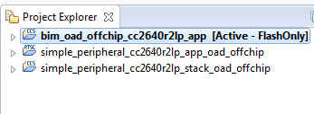

Off-Chip OAD¶
This section describes the off-chip OAD process as well as an overview of the differences between Split Image Off-Chip OAD and Library Off-Chip OAD. Off-chip OAD utilizes an external memory component (Flash) to store the new image during download and image selection/update.
The following procedures are unique to off-chip OAD:
For information about the OAD profile and metadata, please see OAD Concept Overview.
Supported Stack Image Types¶
Off-chip OAD supports the split image and stack library build configurations. This means that the user can update both the application and stack during the same OAD session. Stack and stack_library image types are supported by off-chip OAD, see the following sections for an explanation of the merits of each.
For more information about the stack image types (stack, stack_library) please. see Protocol Stack Build Configurations.
Split Image Off-Chip OAD¶
Split Image Off-Chip OAD has following benefits that an application developer would find useful:
Flexibility of OAD Image & Transfer Time
The developer can choose what type of OAD Image makes the best sense to perform OAD with. If decreased OAD transfer time, the developer can choose to generate an App Only OAD Image. If the developer wants to upgrade the application as well as the stack at the cost of additional transfer time, an App+Stack OAD Image can be generated.
SimpleLink CC2640R2 SDK Examples for Reference
Contained within SimpleLink CC2640R2 SDK the simple_peripheral_oad_offchip project has an implementation of App Only Off-Chip OAD for reference. See Out of the Box Demo (Off-Chip App Only OAD).
However, Split Image Off-Chip OAD has the following drawbacks:
Increased Flash Usage
The introduction of the page aligned image boundary can potentially remove up to nearly a page of flash. Global linking of application and stack is also disabled for Split Image Off-Chip OAD, further reducing flash availability.
Library Off-Chip OAD¶
Library Off-Chip OAD, or StackLibrary Off-Chip OAD has the following benefits that an application developer would find useful:
Additional Flash for Application
The developer will be able to get all the benefits related to the Library build configuration outlined in the CC2640 to CC2640R2F.
However, Library Off-Chip OAD has the following drawbacks:
OAD Transfer Time and Image is Large
The Library Off-Chip configuration requires the developer to transfer an image containing both the application and the stack, always. If SNV is included, it’s possible trim out excess padded data to the nearest page. (This step would also remove the SNV from the OAD image as well). See the SNV section within Add Off-chip OAD to an existing project for more information on preserving SNV
No Reference Example in SimpleLink CC2640R2 SDK
Although there’s no example to reference, the same procedure outlined in this guide cane be used to generate a Library Off-chip OAD project from a Library Project:
Conversion of
cc26xx_app_and_stack.icfto be OAD enabledFollowing the steps outlined in Generating Linker Command File for OAD Off-chip convert the SimpleLink CC2640R2 SDK provided
cc26xx_app_and_stack.icfto be OAD enabled.All Library projects in SimpleLink CC2640R2 SDK utilize
cc26xx_app_and_stack.icffor the applicationsFlashROM_StackLibraryconfiguration.Adding Off-chip OAD Functionality to an existing Library configuration project
With the Off-chip OAD enabled
cc26xx_app_and_stack.icffrom the previous step, follow the steps outlined in Add Off-chip OAD to an existing project with any library enabled project in SimpleLink CC2640R2 SDK. (for example, simple_peripheral or simple_central)
Constraints and Requirements for Off-chip OAD¶
In order to perform off-chip OAD the target system must contain have:
- An external storage device such as serial flash memory with at least 128kB of space. Support of multiple OAD images requires
n * 128kB + (n * EXT_FL_PAGE_SIZE )of external memory storage. Where n is the number of images to be stored in external flash. n must be >= 1.- Free GPIO pins to interface to the external memory (i.e. 4 wires for SPI)
- Enough free code space to reserve the entire contents of pg 31 (4kB) for BIM
Off-chip OAD Memory layout¶
The memory maps for both internal and external flash are detailed below.
Figure 85. Off-Chip OAD Memory Layout
Off-chip OAD applications use the both internal flash memory and an off-chip flash memory device. The internal flash memory contains the Interrupt Vectors, the Application where OAD Profile is embedded, the BLE stack image, the NV Storage Area, the BIM and the CCFG.
The off-chip flash memory on the CC2640R2 Launchpad contains up to 3 OAD Images and up to 3
metadata vectors corresponding to the OAD Images. The memory map layout of the
external flash part is defined in ext_flash_layout.h. The size of each
OAD Image placeholder is 128kB. The memory partition of the application for
Off-chip OAD is depicted in Figure 85..
Each OAD image, either App only or App+Stack, must support OAD Profile so that
further OAD is enabled after it is downloaded to the off-chip memory, copied to
the on-chip memory, and executed.
The sectors in Figure 85. in red are designed to be permanently resident on the device. The BIM and CCFG are not intended to be upgraded via OAD. The OAD design was selected this way so that a failure during the OAD process does not yield a bricked device.
BIM for Off-chip OAD¶
Warning
The BIM will link the resident CCFG sector. Furthermore,
this is a custom CCFG, with the IMAGE_VALID_CONF field set to
0x1F000. This means that the boot ROM of the device will automatically
execute BIM code instead of application code at startup. BIM
will handle starting the application. OAD applications will not need to
include a CCFG. This is a feature of CC2640R2F, and not compatible
with CC2650 devices.
The OAD solution requires that permanently resident boot code, the BIM, exists in order to provide a fail-safe mechanism for determining whether to run the existing application image or to copy a new image or images from off-chip flash to internal flash (code) memory. It is assumed that a valid image exists either in off-chip flash ready to be copied or already placed in on-chip flash at any given time. Given this assumption, the initial image placed in internal flash which does not exist in external flash will have invalid external image metadata, and so the BIM will choose to jump to the existing image’s entry point.
At startup, BIM checks if the application image metadata in off-chip flash has a status indicating that the image is to be copied to the on-chip flash. If the status is 0xFF, copies the image to internal flash and performs CRC validations. If any other status value is found the image will not be verified or copied to internal flash.
If the status field indicates that the image is ready for copying then the CRC validation will be performed as described below:
If a 2 byte value is found that is neither 0x0000 nor 0xFFFF, but a 0xFFFF shadow checksum is found, the BIM computes the CRC over the image. Image length is determined by the metadata that is also stored contiguous with the CRC in on-chip flash that was copied over during the original write of the image from the off-chip flash.
If off-chip flash contains an image to be copied to internal flash, but this
image is undesirable, the BIM can be programmed with symbol NO_COPY
to skip image checking and jump directly into the image already placed in
internal flash; at which point the on-chip flash image could invalidate
the bad image’s metadata or OAD a new image in its place. BIM will not
be able to load any new images while NO_COPY is defined in the build.
BIM is only responsible for making an application image failsafe upon entry. BIM has exactly one entrance to the application image.
The BIM occupies the last flash page with CCFG and uses the interrupt vectors at the start of flash where the Reset Interrupt Vector calls the BIM startup routine to ensure its control of the system upon a device reset.

Figure 86. Functional Overview of Off-chip BIM
Out of the Box Demo (Off-Chip App Only OAD)¶
The SimpleLink CC2640R2 SDK includes demo projects that are setup to use OAD in advance. These build configurations may be flashed onto the device out of the box. All out of the box demos use BTool as the OAD Downloader. Please see OAD Topology Overview for more information. Ensure that BTool is setup correctly first. See BTool Setup for steps on how to do so. The steps listed below assume that a CC2640R2 Launchpad is being used. Additional steps may be required for custom hardware.
Furthermore, the steps in this section are referring to the OAD Target device, the images referenced below should be flashed onto that device.
Using CCS¶
Warning
If both the OAD Target and the OAD Downloader are connected at the same time, CCS may load the image to the wrong device. This is because CCS will select the first XDS110 it finds. This behavior can be avoided by unplugging the OAD Target device, or by setting a multi emulator debug session using CCS. See the wiki Debug with Multiple Emulators for more information.
The steps below will describe how to run the out of the box demo for OAD on CCS.
Import the bim_oad_offchip, stack, and app projects into the workspace.
Figure 87. Offchip OAD CCS Workspace
Build and load the BIM project onto the CC2640R2 Launchpad
Build and load the
simple_peripheral_cc2640r2lp_stack_oad_offchipproject onto the CC2640R2 LaunchpadBuild the and load the
simple_peripheral_cc2640r2lp_app_oad_offchipproject- Note that a special post build step will run and generate a new app image
file called
simple_peripheral_cc2640r2lp_app_oad_offchip.bin. This is the file to be provided to BTool and sent over the air.
- Note that a special post build step will run and generate a new app image
file called
You should now be able to observe that the device is advertising using BTool.
- See BTool OAD Verify Advertising for steps.
Make your application level changes that are intended for OAD update. Follow steps in Changing Application Data to Verify an OAD for a trivial way to change app to verify the OAD. Build the application with changes.
Use BTool to OAD your modified application file following the steps detailed in BTool OAD Procedure
- Make sure you are using the *_oad_offchip.bin file with BTool as this file contains the metadata.
Attention
After a successful OAD, you may need to re-start your CC2640R2F in order for it to advertise again. This is because the XDS110 driver may be still attached from previous debug sessions.
Using IAR¶
The steps below will describe how to run the out of the box demo for OAD on IAR.
Open the
bim_oad_offchipproject, build and load it onto the CC2640R2 Launchpad using the debugger.Open the
simple_peripheral_oad_offchipworkspace from the simple_peripheral_oad_offchip folder within the BLE-stack examples.- Build and load the stack project.
- Be sure to use the
FlashROMbuild configuration for the stack. This configuration corresponds to the ICall split image architecture required by OAD.
Build and load the
simple_peripheralapplication project using theFlashROM_OAD_Offchipbuild config.You should now be able to observe that the device is advertising via BTool.
- See BTool OAD Verify Advertising for steps.
Make your application level changes that are intended for OAD update. Follow steps in Changing Application Data to Verify an OAD for a trivial way to change app to verify the OAD. Build the application with changes.
Use BTool to OAD your modified application file following the steps detailed in BTool OAD Procedure
- Make sure you are using the *_oad.bin file with BTool as this file
contains the metadata. By default these images can be found at:
\examples\rtos\CC2640R2_LAUNCHXL\ble5stack\simple_peripheral_oad_offchip\tirtos\iar\app\FlashROM_OAD_Offchip\Exe
- Make sure you are using the *_oad.bin file with BTool as this file
contains the metadata. By default these images can be found at:
Attention
After a successful OAD, you may need to re-start your CC2640R2F in order for it to advertise again. This is because the XDS110 driver may be still attached from previous debug sessions.
Add Off-chip OAD to an existing project¶
Note
All the following changes get applied to the application side. Stack side should remain untouched for all OAD configurations. For more information see Stack Side Changes for OAD Project.
Use
bim_oad_offchipproject, as is. No change is required.Add OAD profile code to the application project:
- The required files can be found in
\source\ti\ble5stack\profiles\oad\cc26xxoad.coad.hoad_target.hoad_target_external_flash.c
- The required files can be found in
Add External Flash middleware to application project
oad_target_external_flash.crelies on the ExtFlash module from the middleware folder\source\ti\mw\extflash. Add these files to the application project.ExtFlash.cExtFlash.h
Add the necessary include paths to the project:
- The OAD profile code can be found at
\source\ti\ble5stack\profiles\oad\cc26xx
- The OAD profile code can be found at
Use the proper off-chip OAD linker file and configure it properly.
- IAR projects should use:
cc26xx_app_oad.icffor App Only, App + Stack
- CCS projects should use:
cc26xx_app_oad.cmdfor App Only, App + Stack, Library
For information on how to modify an existing linker command file for OAD see Generating Linker Command File for OAD Off-chip.
Add the following preprocessor defines to your application:
- FEATURE_OAD
- HAL_IMAGE_E
Add necessary code to your high level application file to include OAD.
Add the following defines to your application file (i.e. simple_peripheral)
#include "oad_target.h" #include "oad.h" // ... #define OAD_PACKET_SIZE ((OAD_BLOCK_SIZE) + 2) // ... #define SBP_QUEUE_PING_EVT Event_Id_02 #define SBP_ALL_EVENTS (SBP_ICALL_EVT | \ SBP_QUEUE_EVT | \ SBP_PERIODIC_EVT | \ SBP_CONN_EVT_END_EVT | \ SBP_QUEUE_PING_EVT)
Add the following TI-RTOS Queue structures in your application:
// Event data from OAD profile. static Queue_Struct oadQ; static Queue_Handle hOadQ;
Add a callback to your application
void SimpleBLEPeripheral_processOadWriteCB(uint8_t event, uint16_t connHandle, uint8_t *pData);\ // ... static oadTargetCBs_t simpleBLEPeripheral_oadCBs = { SimpleBLEPeripheral_processOadWriteCB // Write Callback. };
Register the OAD service, initialize Queues.
VOID OAD_addService(); // OAD Profile OAD_register((oadTargetCBs_t *)&simpleBLEPeripheral_oadCBs); hOadQ = Util_constructQueue(&oadQ);
Add the OAD Queue processing code to your application
if (events & SBP_QUEUE_PING_EVT) { while (!Queue_empty(hOadQ)) { oadTargetWrite_t *oadWriteEvt = Queue_get(hOadQ); // Identify new image. if (oadWriteEvt->event == OAD_WRITE_IDENTIFY_REQ) { OAD_imgIdentifyWrite(oadWriteEvt->connHandle, oadWriteEvt->pData); } // Write a next block request. else if (oadWriteEvt->event == OAD_WRITE_BLOCK_REQ) { OAD_imgBlockWrite(oadWriteEvt->connHandle, oadWriteEvt->pData); } // Free buffer. ICall_free(oadWriteEvt); } }
Add an application layer OAD callback
void SimpleBLEPeripheral_processOadWriteCB(uint8_t event, uint16_t connHandle, uint8_t *pData) { oadTargetWrite_t *oadWriteEvt = ICall_malloc( sizeof(oadTargetWrite_t) + \ sizeof(uint8_t) * OAD_PACKET_SIZE); if ( oadWriteEvt != NULL ) { oadWriteEvt->event = event; oadWriteEvt->connHandle = connHandle; oadWriteEvt->pData = (uint8_t *)(&oadWriteEvt->pData + 1); memcpy(oadWriteEvt->pData, pData, OAD_PACKET_SIZE); Queue_put(hOadQ, (Queue_Elem *)oadWriteEvt); // Post the application's event. For OAD, no event flag is used. Event_post(syncEvent, SBP_QUEUE_PING_EVT); } }
Add the necessary arguments to your configuro script to relocate your app’s reset vector address.
- Add
OAD_IMG_E=1to your –cfgArgs. See Using a custom reset vector address for your application for more information.
- Add
[Optional] On custom hardware, you may need to change the pinout of the external flash part. This can be done in two steps:
First, change the application layer code.
The application interfaces to the external SPI flash via
ExtFlash.cBy default, the ExtFlash module uses
Board_SPI0, this can be changed to Board_SPI0/* Attempt to open SPI. */ spiHandle = SPI_open(Board_SPI0, &spiParams);
The pins used by the
Board_SPIXgroup can be set in the board file, i.e. CC2640R2_LAUNCHXL.c.mosiPin = CC2640R2_LAUNCHXL_SPI1_MOSI, .misoPin = CC2640R2_LAUNCHXL_SPI1_MISO, .clkPin = CC2640R2_LAUNCHXL_SPI1_CLK, .csnPin = CC2640R2_LAUNCHXL_SPI1_CSN
The defines above can be set in CC2640R2_LAUNCHXL.h
Second, change the pins that the BIM uses to access the SPI flash. This can be done in the
bim_oad_offchipproject. Since BIM is a bare metal program (no-RTOS). It doesn’t use the TI-RTOS SPI driver like the application does. BIM SPI pins are set in\examples\rtos\CC2640R2_LAUNCHXL\ble5stack\bim_oad_offchip\src\bsp.h// Board external flash defines #define BSP_IOID_FLASH_CS IOID_20 #define BSP_SPI_MOSI IOID_9 #define BSP_SPI_MISO IOID_8 #define BSP_SPI_CLK_FLASH IOID_10
[Optional] For App+Stack or Library OAD Images, trim SNV/Unused Space
Library and App+Stack can generate large OAD images especially if the end application utilizes SNV. (App + Stack will always be large)
SNV can be preserved on the OAD Target device by applying the ‘-r’ command to the OAD Image Tool. The ‘-r’ command will limit the output image to within the range specified. Page alignment must still be preserved, so some 0xFFs may be kept in the image.
For example, to preserve page 31, or a 1 page SNV: the
-r :1e000command can be appended to the post build step:"$TOOLS_BLE$\oad\oad_image_tool.exe" "$PROJ_DIR$\FlashROM_OAD_Offchip\Exe\simple_peripheral_cc2640r2lp_app.hex" "$PROJ_DIR$\..\stack\FlashROM\Exe\simple_peripheral_cc2640r2lp_stack.hex" -t offchip -i app --imgVer 0 -ob "$PROJ_DIR$\FlashROM_OAD_Offchip\Exe\simple_peripheral_cc2640r2lp_app_oad.bin" -m 0x0000 -r :0x1e000
The result will be am OAD image file that will not overwrite a target’s 31st page (if used for SNV, adjust as necessary for 2 SNV pages)
Lastly, for Library builds, there will be 0xFFs between the end of the Application + Stack merged section and the SNV. If SNV is being preserved then it is safe to also trim the OAD image to the nearest page.
For example, if a Library OAD image is produced, only takes up the first 15 pages and the SNV does not need to preserved, then append
-r :0x0F000to the post-build step:"$TOOLS_BLE$\oad\oad_image_tool.exe" "$PROJ_DIR$\FlashROM_StackLibrary_OAD_Offchip\Exe\hid_adv_remote_cc2640r2rc_app.hex" -t offchip -i app --imgVer 0 -ob "$PROJ_DIR$\FlashROM_StackLibrary_OAD_Offchip\Exe\hid_adv_remote_cc2640r2rc_app.bin" -m 0x0000 -r :0xF000